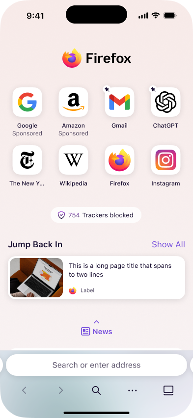
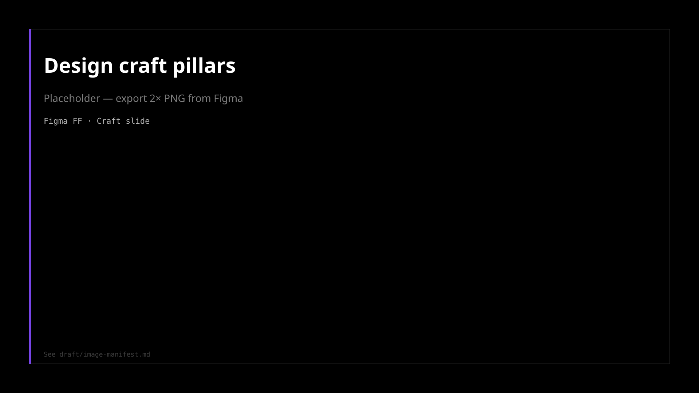
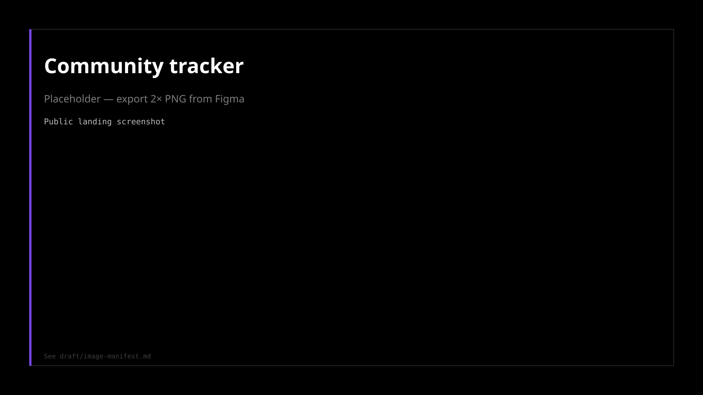

Smart Window
Opt-in AI browsing on Mozilla's terms.
Read →
Firefox has to feel like it belongs in 2026 and still feel like home. Nova is the company-priority redesign (chrome, new tab, onboarding, settings) while Smart Window and mobile surfaces move in parallel, not as afterthoughts.
We're not chasing a trend board. We're making Firefox feel modern, inviting, and familiar at the same time.
"Even the current version in Nightly looks so much better than any previous Firefox design." — Mozilla Connect



| Decision | Call | Trade-off |
|---|---|---|
| Switcher placement | Left of window controls (Windows); upper right (macOS) | Do not move other chrome elements |
| App menu consistency | Icon must not move between Classic, Smart, Private | (none) |
| Compact mode | In Appearance settings, not customize toolbar | (none) |
site/assets/firefox/nightly/ — see draft/image-manifest.mdMore case studies